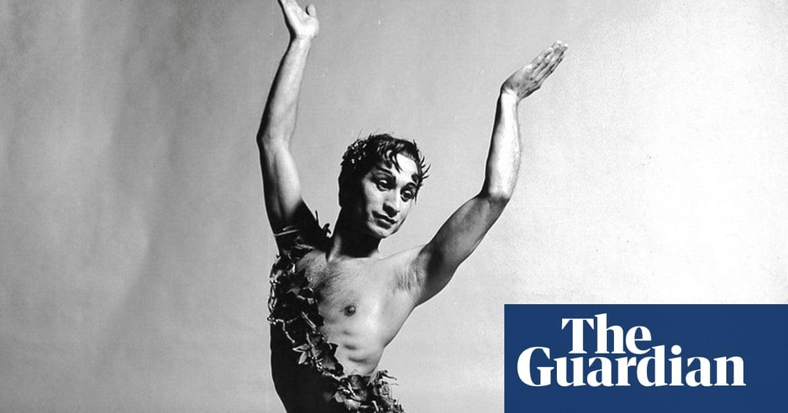

Johaar Mosaval obituaryThe South African ballet dancer Johaar Mosaval, who has died aged 95, was the first dancer of colour to join the Sadler’s Wells Theatre Ballet, in London, later to become the Royal Ballet. As well as abundant natural talent, he demonstrated resilience and determination against the odds, as a black, Muslim boy from a poor family, wanting to make a career in dance. He joined the company in 1952 and danced with them for more than two decades, rising to principal after six years. Mosaval delighted audiences with his speed, personality and fast-footed technique, in roles including the Blue Boy in Frederick Ashton’s Les Patineurs, the can-can dancer in Léonide Massine’s La Boutique Fantasque and the Bluebird in Sleeping Beauty. In Ashton’s The Dream he made “the most captivating and dazzling” Puck, wrote James Kennedy in the Guardian in 1967. “He was a terrific performer, really engaging on stage, and had a completely natural theatricality about him,” said Jeanetta Laurence, who danced with him in the Royal Ballet Touring Company and its successor ensemble the New Group. The ballerina Brenda Last was partnered with Mosaval on her first week in the company, and they went on to dance many crowd-pleasing pas de deux together. “I found him a wonderful person to work with,” she said. “He was so dedicated to the art form and he was someone that you really could rely on as a partner. It was absolutely brilliant to do the Neapolitan dance with him in Swan Lake, with his brilliant footwork and very fast speed; it almost brought the house down at times.” Mosaval was a small, quick, sparky dancer who often played comic roles, including Widow Simone in La Fille Mal Gardée and Dr Coppélius in Coppélia. For the South African choreographer John Cranko, Mosaval danced the role of Jasper, the pot boy whose adoration is rejected by the titular Pineapple Poll, and in 1954 he created the role of Bootface the clown in The Lady and the Fool (with Kenneth MacMillan playing his fellow clown). “As the little clown, you had such empathy with him,” Last said. “Every role he did he took it over and made it his own. It was never just another show, another performance. You really felt you were dancing with somebody of importance.” Cranko also cast Mosaval in the opera Gloriana, created by Benjamin Britten for Queen Elizabeth II’s coronation celebrations in 1953 and performed at the Royal Opera House. Mosaval danced a solo for an audience of international dignitaries that included presidents Harry S Truman and Charles de Gaulle, the Indian prime minister Jawaharlal Nehru, and “every king and queen of the world”, as he remembered it: “Dancing on stage you could see the flickering of the tiaras.” Mosaval’s success in Britain was in stark contrast to the challenges he faced in apartheid-era South Africa. A member of the Cape Malay community, of south-east Asian heritage, he was born in the District Six area of Cape Town. Under apartheid laws he would have been considered “coloured”, but he referred to himself as black. He was the eldest of 10 children in a poor family; his father, Cassiem, was a construction worker and his mother, Galila, a seamstress. “It was very hard, very difficult, very painful,” Mosaval said in an interview with the University of Cape Town. “And many a time I felt, shall I continue with this life? But I continued, I wanted to dance.” As a child he was a keen gymnast, and took part in pantomimes, but schoolmates laughed at him when he announced his ambition to be a ballet dancer, and dancing was not seen as an acceptable career path by his Muslim parents. But they were persuaded by two elders from the local mosque, who saw a glowing report of one of Mosaval’s performances. He went on to train with the South African prima ballerina Dulcie Howes, studying for three years at the University of Cape Town’s ballet school. Mosaval’s opportunity to fulfil his potential came when the British ballet stars Anton Dolin and Alicia Markova visited Cape Town to look for new talent. Wanting to see him perform on stage, they smuggled him into the whites-only Alhambra theatre to audition. Soon he was on his way to the UK, aided by funds raised by the Muslim Progressive Society, to join the Sadler’s Wells Ballet School. On arriving in London, he said: “I felt free. I felt fantastic. Because you know, at the university ballet school I had to stand right at the back alone. [Now] I was free to stand any way I wanted to.” Mosaval graduated into the Sadler’s Wells Theatre Ballet in 1952 and became a principal dancer in 1958, by which time it had been renamed the Royal Ballet Touring Company and then, from 1970, the Royal Ballet New Group. He did face racism in Britain, Last said: “When you think of what they were going through in South Africa and what he had to put up with here too, it was tough on him.” The dancers toured extensively, but when Sadler’s Wells/the Royal Ballet visited South Africa in 1954 and 1960 the company was advised to leave him behind, as it was unlikely he would be allowed to perform under apartheid laws, a decision that led to questions being raised in parliament ahead of the 1960 tour, and to protests in Cape Town. In 1975, however, the South African government invited Mosaval home to set up a new ballet school, and he retired from the Royal Ballet to return to Cape Town. But the school was later closed because he refused to operate under apartheid rules. In 1977 he became the first black dancer to perform at the Nico Malan Opera House (now the Artscape theatre) in Cape Town, although his contract stated he was not allowed to touch the white dancers. His achievements were eventually recognised at the highest level in South Africa when he was awarded the gold category of the Order of Ikhamanga in 2019, and given an honorary doctorate by the University of Cape Town in 2020. A show about his life, Dreaming Dance in District Six, was staged at Artscape in March 2023. At the opening of the show, the former South African finance minister Trevor Manuel said: “There are some icons who stand out because they were able to break through, and Johaar was able to break through.” Mosaval is survived by two younger sisters. Comments (…) Sign in or create your Guardian account to join the discussion |
 |